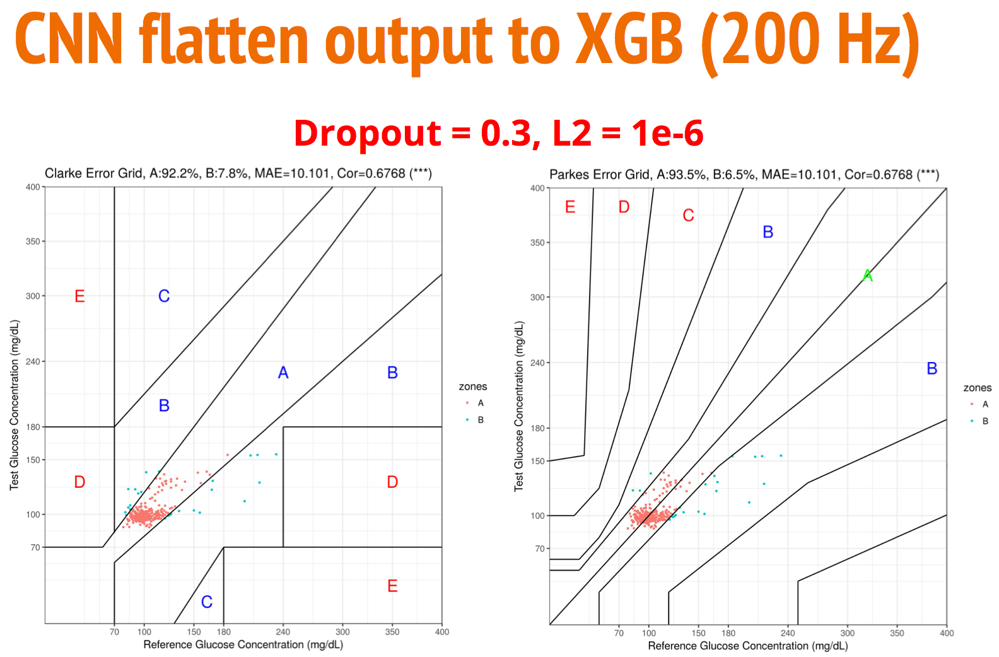
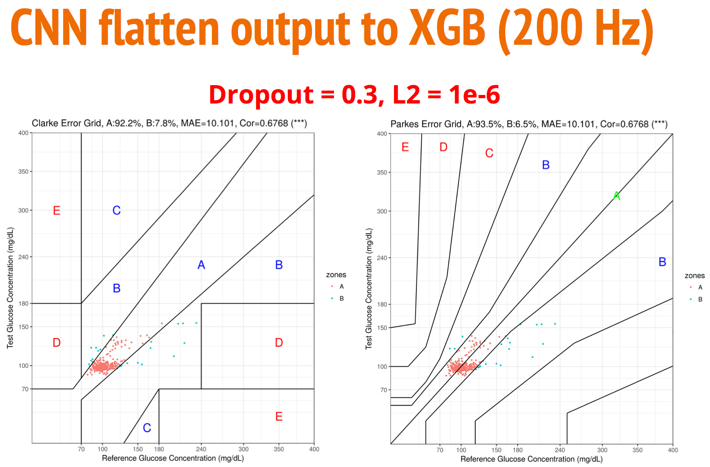
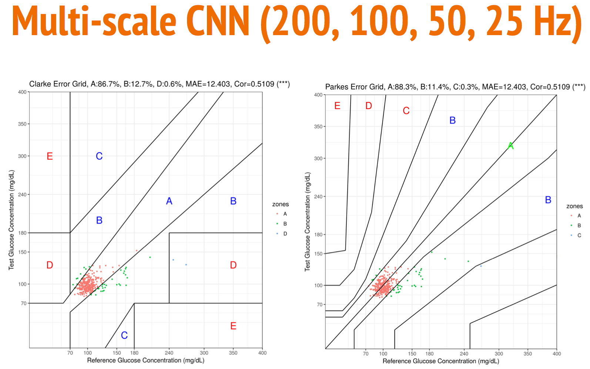
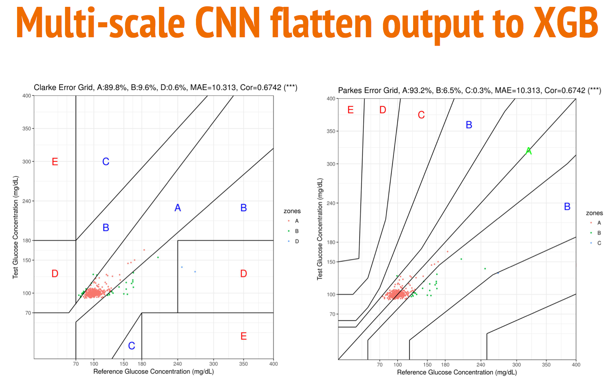
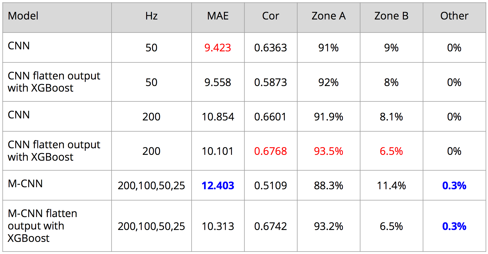

I. Motivation
Traditional blood glucose measurement methods require drawing blood samples by trained personnel and have to prevent the potential transimission of infectious diseases. The procedure is painful, risky, and time-consuming, so here we propose a non-invasive glucose measurement method that can accomplish painless, risk-free, low-cost and frequent testing of glucose, which is an ideal method for self-monitoring of glucose.
In this work, we use both photoplethysmogram (PPG) and Electrocardiogram (ECG) signals to predict blood glucose. These two kinds of signals are sampled in frequency of 1000Hz and length of 60 seconds:
- PPG signals are obtained from transmissive absorption at two-handed finger tips, including radiation (R) and infrared radiation (IR) channels, resulting in 4 channels.
- ECG signal is from single lead connected to the human chest, resulting in 1 channel.
We collect 1752 samples from 876 individuals and measure their fasting blood glucose as our prediction targets. Total 876 individuals are split into training set (80%) and testing set (20%).
II. Preprocessing
A. Signal Filtering
The PPG waveform consists of direct current (DC) and alternating current (AC) components. The AC component shows changes in the blood volume that occurs between the systolic and diastolic phases of the cardiac cycle; the fundamental frequency of the AC component depends on the heart rate and is superimposed onto the DC component. Note that the DC component changes slowly with respiration.
To filter out the DC component in PPG signals, every PPG signal is passed through a high-pass filter with 30Hz cut-off frequency to obtain AC-only signal. After adding four AC-only PPG signls, there are total nine signals.
B. Signal Processing
Downsampling: to reduce the dimension of model input, every signal is downsampled from 1000Hz to 200Hz or 50Hz by scipy.signal.
Normalization: every signal is independently normalized by sklearn.preprocessing.RobustScaler.
C. Data Augmentation
Originally, a signal is recorded for 60 seconds. Here we randomly crop into five thirty-second signal segments as a kind of augmentation.
All in all, our input signals have 9 channels: 4 PPG (DC+AC), 4 PPG (AC-only) and 1 ECG signal in frequency of 200Hz or 50Hz; the time span of every signal is 30 seconds.
III. Model Architecture
A. 22 layers of CNN
22 layers of CNN
Besides, we regard the flattened CNN output as a signal embedding, and use the learned embeddings as the input to another machine learning model, XGBoost, to predict blood glucose.
B. Local CNN for Multi-scale
Local CNN for Multi-scale
IV. Experiment Results
Four evaluation metrics: (1) mean absolute error, (2) Pearson's correlation coefficient, (3) Clarke error grid and (4) Parke error grid.
Clarke and Parke error grids separates reference value and predicted value into five zones, and the interpretations of each zone are as follow:
- : Clinically correct decisions
- : Clinically uncritical decisions
- : Overcorrection
- : Skip a necessary correction
- : Perform a wrong correction
In Parke error grid, the result of the 22 layers of CNN achieves 91.9% in zone-A and 8.1% in zone-B. However, the result of XGBoost with signal embeddings improves to 93.5% in zone-A and the remaining in zone-B.
 

Here we show the result of the proposed multi-scale CNN. Unfornately, the multi-scale CNN do not outperform the 22 layers of CNN, dropping by a small margin of 0.3% in zone-A of Parke error grid. Note that
 
The summary of all experiments is in the following.

V. Conclusions
- Developed a non-invasive blood glucose measurement method by using PPG and ECG signals instead of blood samples
- Proposed a CNN architecture to process raw PPG and ECG signals, and this CNN model achieves 91.9% of zone A (others in B)
- Utilized the flattened output of CNN as the input to XGBoost, and the combined model achieves 93.5% of zone A (others in B)
- We tried to aggregate signals in different frequencies, but the proposed multi-scale CNN model cannot outperform the above models
References
- Tamura, Toshiyo, et al. "Wearable photoplethysmographic sensors—past and present." Electronics 3.2 (2014): 282-302.
- Clarke, William L., et al. "Evaluating clinical accuracy of systems for self-monitoring of blood glucose." Diabetes care 10.5 (1987): 622-628.
- Parkes, Joan L., et al. "A new consensus error grid to evaluate the clinical significance of inaccuracies in the measurement of blood glucose." Diabetes care 23.8 (2000): 1143-1148.